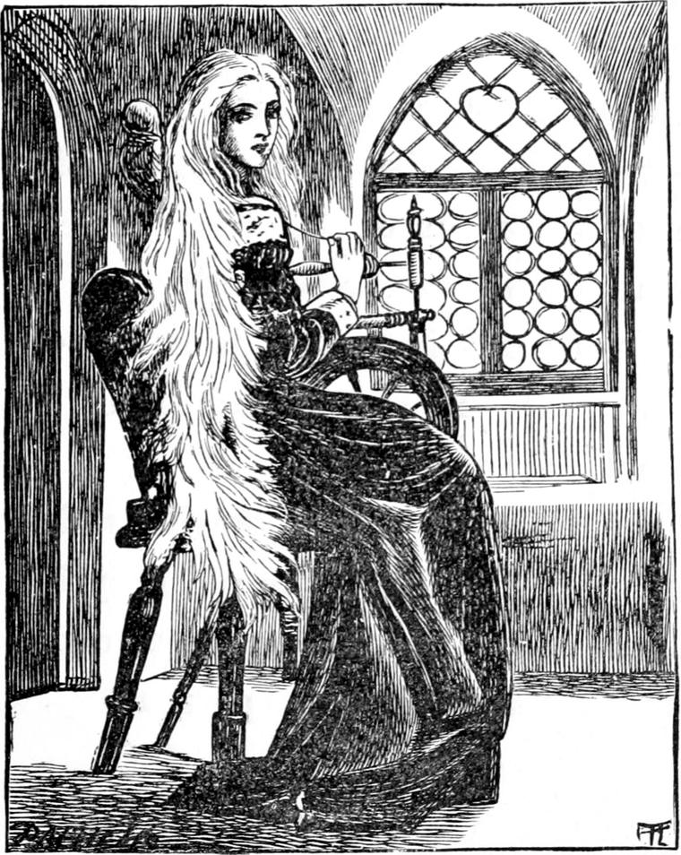

When she came to the top, she found herself in a little square place, with three doors, two opposite each other, and one opposite the top of the stair. She stood for a moment, without an idea in her little head what to do next. But as she stood, she began to hear a curious humming sound. Could it be the rain? No. It was much more gentle, and even monotonous than the sound of the rain, which now she scarcely heard. The low sweet humming sound went on, sometimes stopping for a little while and then beginning again. It was more like the hum of a very happy bee that had found a rich well of honey in some globular flower, than anything else I can think of at this moment. Where could it come from? She laid her ear first to one of the doors to hearken if it was there—then to another. When she laid her ear against the third door, there could be no doubt where it came from: it must be from something in that room. What could it be? She was rather afraid, but her curiosity was stronger than her fear, and she opened the door very gently and peeped in. What do you think she saw? A very old lady who sat spinning.

Perhaps you will wonder how the princess could tell that the old lady was an old lady, when I inform you that not only was she beautiful, but her skin was smooth and white. I will tell you more. Her hair was combed back from her forehead and face, and hung loose far down and all over her back. That is not much like an old lady—is it? Ah! but it was white almost as snow. And although her face was so smooth, her eyes looked so wise that you could not have helped seeing she must be old. The princess, though she could not have told you why, did think her very old indeed—quite fifty, she said to herself. But she was rather older than that, as you shall hear.
While the princess stared bewildered, with her head just inside the door, the old lady lifted hers, and said, in a sweet, but old and rather shaky voice, which mingled very pleasantly with the continued hum of her wheel:
'Come in, my dear; come in. I am glad to see you.'
That the princess was a real princess you might see now quite plainly; for she didn't hang on to the handle of the door, and stare without moving, as I have known some do who ought to have been princesses but were only rather vulgar little girls. She did as she was told, stepped inside the door at once, and shut it gently behind her.
'Come to me, my dear,' said the old lady.
And again the princess did as she was told. She approached the old lady—rather slowly, I confess—but did not stop until she stood by her side, and looked up in her face with her blue eyes and the two melted stars in them.
'Why, what have you been doing with your eyes, child?' asked the old lady.
'Crying,' answered the princess.
'Why, child?'
'Because I couldn't find my way down again.'
'But you could find your way up.'
'Not at first—not for a long time.'
'But your face is streaked like the back of a zebra. Hadn't you a handkerchief to wipe your eyes with?'
'No.'
'Then why didn't you come to me to wipe them for you?'
'Please, I didn't know you were here. I will next time.'
'There's a good child!' said the old lady.
Then she stopped her wheel, and rose, and, going out of the room, returned with a little silver basin and a soft white towel, with which she washed and wiped the bright little face. And the princess thought her hands were so smooth and nice!
When she carried away the basin and towel, the little princess wondered to see how straight and tall she was, for, although she was so old, she didn't stoop a bit. She was dressed in black velvet with thick white heavy-looking lace about it; and on the black dress her hair shone like silver. There was hardly any more furniture in the room than there might have been in that of the poorest old woman who made her bread by her spinning. There was no carpet on the floor—no table anywhere—nothing but the spinning-wheel and the chair beside it. When she came back, she sat down and without a word began her spinning once more, while Irene, who had never seen a spinning-wheel, stood by her side and looked on. When the old lady had got her thread fairly going again, she said to the princess, but without looking at her:
'Do you know my name, child?'
'No, I don't know it,' answered the princess.
'My name is Irene.'
'That's my name!' cried the princess.
'I know that. I let you have mine. I haven't got your name. You've got mine.'
'How can that be?' asked the princess, bewildered. 'I've always had my name.'
'Your papa, the king, asked me if I had any objection to your having it; and, of course, I hadn't. I let you have it with pleasure.'
'It was very kind of you to give me your name—and such a pretty one,' said the princess.
'Oh, not so very kind!' said the old lady. 'A name is one of those things one can give away and keep all the same. I have a good many such things. Wouldn't you like to know who I am, child?'
'Yes, that I should—very much.'
'I'm your great-great-grandmother,' said the lady.
'What's that?' asked the princess.
'I'm your father's mother's father's mother.'
'Oh, dear! I can't understand that,' said the princess.
'I dare say not. I didn't expect you would. But that's no reason why I shouldn't say it.'
'Oh, no!' answered the princess.
'I will explain it all to you when you are older,' the lady went on. 'But you will be able to understand this much now: I came here to take care of you.'
'Is it long since you came? Was it yesterday? Or was it today, because it was so wet that I couldn't get out?'
'I've been here ever since you came yourself.'
'What a long time!' said the princess. 'I don't remember it at all.'
'No. I suppose not.'
'But I never saw you before.'
'No. But you shall see me again.'
'Do you live in this room always?'
'I don't sleep in it. I sleep on the opposite side of the landing. I sit here most of the day.'
'I shouldn't like it. My nursery is much prettier. You must be a queen too, if you are my great big grand-mother.'
'Yes, I am a queen.'
'Where is your crown, then?' 'In my bedroom.'
'I should like to see it.'
'You shall some day—not today.'
'I wonder why nursie never told me.'
'Nursie doesn't know. She never saw me.'
'But somebody knows that you are in the house?'
'No; nobody.'
'How do you get your dinner, then?'
'I keep poultry—of a sort.'
'Where do you keep them?'
'I will show you.'
'And who makes the chicken broth for you?'
'I never kill any of MY chickens.'
'Then I can't understand.'
'What did you have for breakfast this morning?' asked the lady.
'Oh! I had bread and milk, and an egg—I dare say you eat their eggs.'
'Yes, that's it. I eat their eggs.'
'Is that what makes your hair so white?'
'No, my dear. It's old age. I am very old.'
'I thought so. Are you fifty?'
'Yes—more than that.'
'Are you a hundred?'
'Yes—more than that. I am too old for you to guess. Come and see my chickens.'
Again she stopped her spinning. She rose, took the princess by the hand, led her out of the room, and opened the door opposite the stair. The princess expected to see a lot of hens and chickens, but instead of that, she saw the blue sky first, and then the roofs of the house, with a multitude of the loveliest pigeons, mostly white, but of all colours, walking about, making bows to each other, and talking a language she could not understand. She clapped her hands with delight, and up rose such a flapping of wings that she in her turn was startled.
'You've frightened my poultry,' said the old lady, smiling.
'And they've frightened me,' said the princess, smiling too. 'But what very nice poultry! Are the eggs nice?'
'Yes, very nice.' 'What a small egg-spoon you must have! Wouldn't it be better to keep hens, and get bigger eggs?'
'How should I feed them, though?'
'I see,' said the princess. 'The pigeons feed themselves. They've got wings.'
'Just so. If they couldn't fly, I couldn't eat their eggs.'
'But how do you get at the eggs? Where are their nests?'
The lady took hold of a little loop of string in the wall at the side of the door and, lifting a shutter, showed a great many pigeon-holes with nests, some with young ones and some with eggs in them. The birds came in at the other side, and she took out the eggs on this side. She closed it again quickly, lest the young ones should be frightened.
'Oh, what a nice way!' cried the princess. 'Will you give me an egg to eat? I'm rather hungry.'
'I will some day, but now you must go back, or nursie will be miserable about you. I dare say she's looking for you everywhere.'
'Except here,' answered the princess. 'Oh, how surprised she will be when I tell her about my great big grand-grand-mother!'
'Yes, that she will!' said the old lady with a curious smile. 'Mind you tell her all about it exactly.'
'That I will. Please will you take me back to her?'
'I can't go all the way, but I will take you to the top of the stair, and then you must run down quite fast into your own room.'
The little princess put her hand in the old lady's, who, looking this way and that, brought her to the top of the first stair, and thence to the bottom of the second, and did not leave her till she saw her half-way down the third. When she heard the cry of her nurse's pleasure at finding her, she turned and walked up the stairs again, very fast indeed for such a very great grandmother, and sat down to her spinning with another strange smile on her sweet old face.
About this spinning of hers I will tell you more another time.
Guess what she was spinning.